MOBILE TASK FORCES
Mobile Task Forces (MTFs) are elite units comprised of personnel drawn from across the Foundation and are mobilized to deal with specific threats or situations that sometimes exceed the operational capacity or expertise of regular field personnel and — as their name suggests — may be relocated between facilities or locations as they are needed. Mobile Task Force personnel represent the "best of the best" of the Foundation.
Mobile Task Forces vary greatly in size, composition, and purpose. A battalion-strength combat-oriented task force trained to deal with highly aggressive anomalous entities may consist of hundreds of troops plus support personnel, vehicles, and equipment and can be deployed in whole or in part to deal with threats across the globe. However, a Mobile Task Force can also be a small, specialized intelligence-gathering or investigative task force that may have fewer than a dozen personnel if that is deemed sufficient to accomplish their goals.
While in the field, task force members often pose as emergency responders, local or federal law enforcement, or military personnel appropriate to the region in which they are operating. Mobile Task Force Commanders can also request the assistance of local field units or personnel stationed at nearby Foundation facilities in order to accomplish their missions.
ORGANIZATION
Each unit is fundamentally structured in a way that best suits their intended purpose. While combat-oriented task forces may closely follow military hierarchy and organization, smaller units may have an informal or otherwise esoteric chain of command. As such, the responsibilities of the Mobile Task Force Commander (MTFC) for each particular task force can vary greatly; the commander for a large task force might focus on maintaining multiple teams and deploying them as necessary to each assigned operation, whereas the commander of a small team might deploy with their team and direct the operation from on location.
Similarly, the cohesion of each unit will vary as well. Some Mobile Task Forces consist of personnel who have trained and worked for many years or even decades together, whereas the personnel of a Mobile Task Force formed on a moment's notice to deal with a specific incident may know little more than each others' names and fields of expertise.
CREATION
Mobile Task Forces are typically commissioned as deemed necessary by the Foundation's Director of Task Forces, often with the direct approval of one or more O5 Council members. A significant number of Mobile Task Forces are created to deal with specific anomalies exhibiting traits that standard containment or response teams are unable to effectively counteract, though many were also created to pre-empt an emerging or theoretical threat.
DEACTIVATION
Mobile Task Forces created for the purpose of containing a particular anomaly are typically deactivated at the end of the recovery operation or when ongoing containment is deemed no longer necessary. Occasionally, such task forces remain operational if the expertise and experiences learned are considered useful for future incidents, but otherwise the task force will likely be disbanded and its personnel returned to their prior posts. Very rarely, a Mobile Task Force will also be disbanded if it suffers sufficient casualties to render it incapable of operation. In these cases, if the prior capability of that particular task force is deemed necessary, a new task force may be commissioned to replace it.
Table of Contents
MTF Alpha-1 ("Red Right Hand")
MTF Alpha-4 ("Pony Express")
MTF Alpha-9 ("Last Hope")
MTF Beta-4 ("Castaways")
MTF Beta-7 ("Maz Hatters")
MTF Beta-777 ("Hecate's Spear")
MTF Gamma-5 ("Red Herrings")
MTF Gamma-6 ("Deep Feeders")
MTF Gamma-13 ("Asimov's Lawbringers")
MTF Delta-5 ("Front Runners")
MTF Epsilon-6 ("Village Idiots")
MTF Epsilon-9 ("Fire Eaters")
MTF Epsilon-11 ("Nine-Tailed Fox")
MTF Zeta-9 ("Mole Rats")
MTF Eta-4 ("Begone Thoth")
MTF Eta-5 ("Jäeger Bombers")
MTF Eta-10 ("See No Evil")
MTF Eta-11 ("Savage Beasts")
MTF Eta-77 ("Spheres Within Spheres")
MTF Theta-4 ("Gardeners")
MTF Theta-90 ("Angle Grinders")
MTF Iota-10 ("Damn Feds")
MTF Kappa-10 ("Skynet")
MTF Lambda-4 ("Birdwatchers")
MTF Lambda-5 ("White Rabbits")
MTF Lambda-12 ("Pest Control")
MTF Lambda-14 ("One Star Reviewers")
MTF Mu-3 ("Highest Bidders")
MTF Mu-4 ("Debuggers")
MTF Mu-13 ("Ghostbusters")
MTF Nu-7 ("Hammer Down")
MTF Omicron Rho ("The Dream Team")
MTF Pi-1 ("City Slickers")
MTF Rho-1 ("The Professors")
MTF Rho-9 ("Technical Support")
MTF Rho-19 ("Cythereans")
MTF Sigma-3 ("Bibliographers")
MTF Sigma-66 ("Sixteen Tons")
MTF Tau-5 ("Samsara")
MTF Tau-9 ("Bookworms")
MTF Phi-2 ("Clever Girls")
MTF Psi-7 ("Home Improvement")
MTF Psi-8 ("The Silencers")
MTF Omega-0 ("Ará Orún")
MTF Omega-7 ("Pandora's Box")
MTF Omega-12 ("Achilles' Heels")
MTF Stigma-9 ("Evolved from Naturally Occurring Gears, Levers and Pulleys")
Additional MTFs
MTF Beta-2 ("Bayou Boys")
MTF Gamma-4 ("Blondebeard's Crew")
MTF Delta-14 ("Winter Wonderland")
MTF Epsilon-7 ("Forget Me Nots")
MTF Theta-5 ("The Bigger Boat")
MTF Kappa-43 ("The Mediators")
MTF Xi-8 ("Last to Fall")
MTF Sigma-9 ("Valkyries")
MTF Sigma-10 ("The Sloth's Arm")
MTF Tau-51 ("Urban Brawl")
MTF Upsilon-4 ("Sugar Pill")
MTF Phi-Eolh ("Provident Trawlers")
MTF Chi-7 ("Plague Tamers")
MTF Chi-9 ("Page Turners")
MTF Psi-13 ("Witch Hunters")
MTF Omega-1 ("Law's Left Hand")
Mobile Task Force List
MTF Alpha-1 ("Red Right Hand")
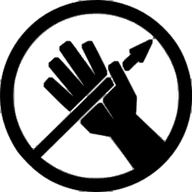
Task Force Mission: Mobile Task Force Alpha-1 is a task force that reports directly to the O5 Council and is used in situations that require the strictest operational security. The task force consists of the Foundation's best and most loyal operatives. Further information regarding MTF Alpha-1 is classified Level 5.
Assisting In Containment of Objects:
- SCP-001: Dead Men
- SCP-2271
- SCP-3434
- SCP-3499
- SCP-3741
- SCP-3791
- SCP-4470
- SCP-5008
- SCP-5105
- SCP-5920
Action Reports:
- The High Court With The Magic Army
- Null Space
- Legerdemain
- Chaos Insurgency Hub
- Gate of Janus
MTF Alpha-4 ("Pony Express")
Task Force Mission: Mobile Task Force Alpha-4 consists primarily of personnel trained to act as undercover employees and specialize in tracking, intercepting, and securing anomalous objects sent through postal and package delivery services worldwide.
Assisting In Containment of Objects:
- SCP-111
- SCP-130
- SCP-360
- SCP-2177
- SCP-2577
- SCP-2752
- SCP-3060
- SCP-3512
- SCP-3601
- SCP-4209
- SCP-5430
MTF Alpha-9 ("Last Hope")
Task Force Mission: The reborn Omega-7. A Mobile Task Force explicitly intended to train and utilize humanoid SCP objects in the field.
Utilizing Objects:
- SCP-105
- SCP-2913
- SCP-2987
- SCP-4051
- SCP-4494
Assisting In Containment of Objects:
- SCP-5025
Action Reports:
- Resurrection Hub
- The Seed of an Idea
- Deals With The Devil
- The Wolves at the Door
- In Harm's Way
- Operation "Camp Granada"
- No Joke
- Getting Into Treble
- Calm
- The Siege of Site-19
- Resurrection: New Faces (Series)
- Resurrection: His Will Be Done (Series)
Task Force Mission: MTF Beta-4 is a task force created with the sole purpose of assisting and monitoring /wilson-s-wildlife-solutions-hub">GoI-466 (Wilson's Wildlife Solutions) in their interactions with local fauna-based anomalies.
Assisting In Containment of Objects:
- SCP-3465
- SCP-3466
- SCP-3467
- SCP-3577
- SCP-3676
- SCP-3879
MTF Beta-7 ("Maz Hatters")
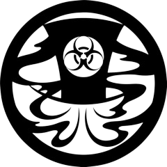
Task Force Mission: Mobile Task Force Beta-7 specializes in the acquisition and containment of anomalies exhibiting extreme biological, chemical, or radiological hazards as well as the rapid containment and cleanup of areas affected by such anomalies. This includes the planning and deployment of contingencies for wide-area or pandemic spread of anomalous disease agents or other contagious phenomena.
Assisting In Containment of Objects:
- SCP-400
- SCP-550
- SCP-1280
- SCP-1393
- SCP-2133
- SCP-2376
- SCP-2438
- SCP-2810
- SCP-3016
- SCP-4771
- SCP-5397
- SCP-6118
Action Reports:
- Operation "Camp Granada"
- A World's Legacy
- Lockdown Procedures
MTF Beta-777 ("Hecate's Spear")
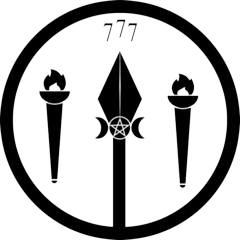
Task Force Mission: Specializes in thaumatuassetsical ritual analysis and countermeasures; including thaumaturgical combat. Based out of Site-91.
Assisting In Containment of Objects:
- SCP-3743
- SCP-4612
- SCP-4712
- SCP-5079
- SCP-5512
- SCP-5626
- SCP-5923
- SCP-5957
- SCP-6094
- SCP-6364
Action Reports:
- Project Hecatoncheires under Site-93 Director Varga:
- Rabban Hormizd Monastery - 3rd May, 1992
- Moscow, Russia - 11th June, 1993
- Extranormal Event #8832 - 3rd July, 1993
- Site-91 - Late 2021
MTF Gamma-5 ("Red Herrings")
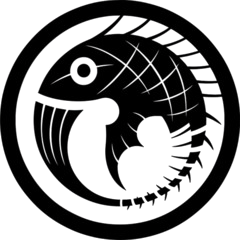
Task Force Mission: Mobile Task Force Gamma-5 specializes in preventing the dissemination of knowledge of anomalous events or phenomena in cases where initial suppression efforts have proven ineffective or insufficient, or in cases where such knowledge has already reached critical levels of public exposure. This includes the research and deployment of experimental amnestics as well as memory fabrication procedures.
Assisting In Containment of Objects:
- SCP-1086
- SCP-1110
- SCP-1460
- SCP-1532
- SCP-1548
- SCP-1570
- SCP-1618
- SCP-1670
- SCP-2105
- SCP-2342
- SCP-2631
- SCP-3339
- SCP-3666
- SCP-4039
- SCP-4160
- SCP-5060
- SCP-5479
- SCP-5916
Action Reports:
- Project Heimdall - Prologue
- Bigger Than Jesus
- Himinbjoerg
- Lockdown Procedures
MTF Gamma-6 ("Deep Feeders")
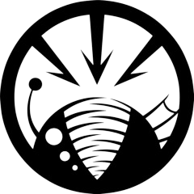
Task Force Mission: Mobile Task Force Gamma-6 specializes in the investigation and tracking of deep-sea or oceanic anomalies.
Assisting In Containment of Objects:
- SCP-169
- SCP-879
- SCP-1264
- SCP-1409
- SCP-2120
- SCP-2770
- SCP-2956
- SCP-3069
- SCP-5533
- SCP-6055
Action Reports:
- Parting
- Interlude - Drift
MTF Gamma-13 ("Asimov's Lawbringers")
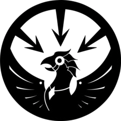
Task Force Mission: Mobile Task Force Gamma-13 specializes in the investigation, tracking, and apprehension of anomalous objects, persons, and entities associated with GoI-1115 (Anderson Robotics). This includes identification of Anderson customers, location of Anderson products and conduction of raids on Anderson offices.
Assisting In Containment of Objects:
- SCP-2306
- SCP-2806
- SCP-2906
- SCP-3560
- SCP-6660
- SCP-750-KO
Action Reports:
- Anderson Robotics Hub
- SCP-3301 Testing Log
- All Hallows'
- The Elusive Anderson
- Austringers
- The Blackbird and the Falcon
- Assault on Site-64
MTF Delta-5 ("Front Runners")
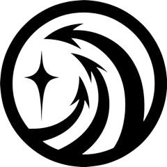
Task Force Mission: Mobile Task Force Delta-5 is comprised of multiple autonomous deep-cover cells specializing in the identification and pre-emptive acquisition of anomalous objects and entities of interest to other Groups of Interest.
Assisting In Containment of Objects:
- SCP-185
- SCP-472
- SCP-1139
- SCP-5071
Action Reports:
MTF Epsilon-6 ("Village Idiots")
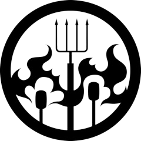
Task Force mission: Specializes in the investigation, containment, and subsequent cleanup of anomalies in rural and suburban environments.
Assisting In Containment of Objects:
- SCP-2447
- SCP-2480
- SCP-2561
- SCP-2815
- SCP-3322
- SCP-3449
- SCP-3845
- SCP-3942
- SCP-4709
- SCP-4775
- SCP-5000
- SCP-5700
- SCP-5820
- SCP-5910
- SCP-6186
- SCP-6619
- SCP-6717
MTF Epsilon-9 ("Fire Eaters")
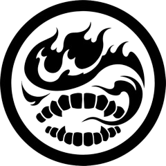
Task Force mission: Epsilon-9 specializes in the use of incendiary weaponry and operations in high-temperature environments.
Assisting In Containment of Objects:
- SCP-165
- SCP-262
- SCP-968
- SCP-2340
- SCP-3205
- SCP-4111
MTF Epsilon-11 ("Nine-Tailed Fox")
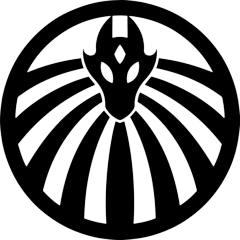
Task Force Mission: Mobile Task Force Epsilon-11 handles internal security for the SCP Foundation, under oversight by MTF Alpha-1. They are a special ops force deployed to Foundation Sites when standard protocols fail and multiple breaches are imminent. As such, most of their operations are classified.
Assisting In Containment of Objects:
- SCP-2139
- SCP-2479
- SCP-3030
- SCP-4171
- SCP-4511
- SCP-5018
- SCP-5254
Action Reports:
MTF Zeta-9 ("Mole Rats")
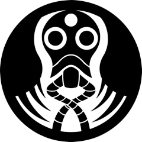
Task Force Mission: Mobile Task Force Zeta-9 specializes in the investigation, exploration, and containment of underground or enclosed areas exhibiting anomalous phenomena, particularly those with inconsistent topography or unstable spacetime.
Assisting In Containment of Objects:
- SCP-001: AMONI-RAM
- SCP-184
- SCP-455
- SCP-835
- SCP-1162
- SCP-1444
- SCP-1730
- SCP-2518
- SCP-2591
- SCP-2955
- SCP-3066
- SCP-3512
- SCP-3667
- SCP-5015
- SCP-5100
- SCP-5392
- SCP-5653
- SCP-5992
- SCP-6991
Action Reports:
- Old Roots
- Animalia
- Experiment Log 914
- The Lockdown
- Himinbjoerg
- Lessons for Old Dogs
- The Last Good Man In The Foundation
MTF Eta-4 ("Begone Thoth")
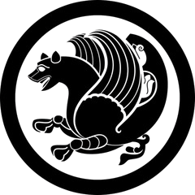
Task Force Mission: Mobile Task Force Eta-4 is a unit of intelligent SCP-3095-affected seabirds. Eta-4 specializes in information collection and analysis, complementary field research and support, and in extreme cases, airborne combat. The task force was ultimately charged with protecting humanity after the BE-Class "Migration" End-of-Consciousness Scenario.
Assisting In Containment of Objects:
- EE-3570
- SCP-4688
- SCP-5106
Action Reports:
- Team Bird Hub
- Join the Flock
- SPC-507
- The Sacred Djehuti
- Avian Anthology I
- Avian Anthology II
MTF Eta-5 ("Jäeger Bombers")
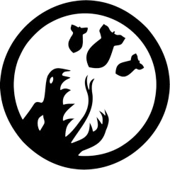
Task Force Mission: Mobile Task Force Eta-5 is a rapid-response unit specializing in the tracking, capturing, and containment of Large-Scale Aggressors (entities over 30m in height). Deploys from, and detains LSAs within Dimensional-Site-172.
Assisting In Containment of Objects:
- SCP-2764
- SCP-3534
- SCP-4315
- SCP-5391
- SCP-5514
Action Reports:
- Anastasis Hub
- LTE-2712-Bosch
- Lockdown Procedures
MTF Eta-10 ("See No Evil")
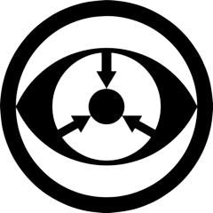
Task Force Mission: Mobile Task Force Eta-10 specializes in the investigation, acquisition, and initial containment of objects or entities exhibiting visual cognitohazards, visual memetic agents, or otherwise require indirect or alternative observation in order to safely handle.
Assisting In Containment of Objects:
- SCP-020
- SCP-125
- SCP-571
- SCP-904
- SCP-1561
- SCP-2136
- SCP-2140
- SCP-2155
- SCP-2828
- SCP-3393
- SCP-3519
- SCP-3597
- SCP-4149
- SCP-4550
- SCP-4600
- SCP-4879
- SCP-5052
- SCP-6178
Action Reports:
- Experiment Log T-98816-OC108/682
- SCP-1933-EX
- Lockdown Procedures
- SCP-V1L3-J
MTF Eta-11 ("Savage Beasts")
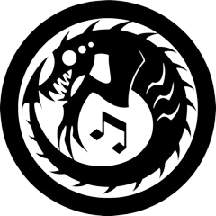
Task Force Mission: Mobile Task Force Eta-11 specializes in the investigation, acquisition, and containment of auditory and musical anomalies, including any auditory cognitohazards or sound-based anomalous threats.
Assisting In Containment of Objects:
- SCP-1687
- SCP-1844
- SCP-2402
- SCP-2828
- SCP-3447
- SCP-3519
- SCP-4150
- SCP-4614
Action Reports:
- A Convincing Lyre
- An Impenitent Thief
- Project Proposal 2014-2112: "Dreams of Failure"
- Pattern Breaker
- The Musical Suspects
- Counterpoint
- Lockdown Procedures
MTF Eta-77 ("Spheres Within Spheres")
Task Force Mission: The Department of Tactical Theology's personalized operational unit, consisting of fifteen specialized members. All personnel in the task force have expertise in dealing with aggressive or threatening religion-related anomalies.
Assisting In Containment of Objects:
- SCP-4531
- SCP-5327
- SCP-5993
- SCP-6542
- SCP-6777
MTF Theta-4 ("Gardeners")
Task Force Mission: Mobile Task Force Theta-4 specializes in the acquisition and containment of plant or plant-like anomalous objects and entities, especially fieldwork involving wide-spread infestations of such anomalies.
Assisting In Containment of Objects:
- SCP-628
- SCP-1147
- SCP-1255
- SCP-1262
- SCP-1717
- SCP-2108
- SCP-3215
- SCP-3421
- SCP-6880
MTF Theta-90 ("Angle Grinders")
Task Force Mission: Mobile Task Force Theta-90 deals with anomalous topologies, geometries, and similar mathematical problem areas.
Assisting In Containment of Objects:
- SCP-1707
- SCP-2601
- SCP-3307
- SCP-4037
- SCP-4096
- SCP-4104
Action Reports:
- Tuesday, 11am, Conference Room Three
- Wednesday, 3pm, The Office of Paul Dimaccio
- Monday, 6am, Escherville Facility Two
- Friday, 2200, Paul Dimaccio's Personal Quarters
- Running Out
- Mobile Task Force Induction Remarks
- SCP-914 Experiment Log vol. 11
- Four Years Later
MTF Iota-10 ("Damn Feds")
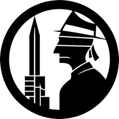
Task Force Mission: Mobile Task Force Iota-10 maintains undercover operatives in various international, federal, and provincial law enforcement agencies and specializes in facilitating the transfer of anomalous evidence and objects into Foundation control as well as the transfer of jurisdiction over anomalous event locations from local law enforcement to Foundation containment and response teams.
Assisting In Containment of Objects:
- SCP-210
- SCP-437
- SCP-1243
- SCP-1359
- SCP-2036
- SCP-2578
- SCP-2890
- SCP-2942
- SCP-3117
- SCP-3155
- SCP-3458
- SCP-3183
- SCP-4581
- SCP-5177
- SCP-5617
Action Reports:
- Project Heimdall - Prologue
- SCP-1949-EX
- Operation Galvanic Ukulele
- After-Action Report: Operation Thermopylae
Task Force Mission: Mobile Task Force Kappa-10 is a temporary designation until such time it is either officially dissolved or sanctioned. It is strictly tasked in investigating and engaging 'cyber-anomalies' using a combination of virtual agents (AICs) and Foundation researchers to track, neutralize, and/or contain such intangible threats.
Assisting In Containment of Objects:
- SCP-2522
- SCP-2806
- SCP-2987
- SCP-3090
- SCP-3323
- SCP-3959
- SCP-4950
- SCP-5018
- SCP-5860
Action Reports:
- Hello World
- Part 1
- Part 2
- Part 3
- Part 4
- Rogue AI
- Basic Observations
- Himinbjoerg
MTF Lambda-4 ("Birdwatchers")
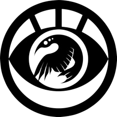
Task Force Mission: Mobile Task Force Lambda-4 specializes in the identification, tracking, and containment of airborne biological anomalies, especially anomalous avian organisms.
Assisting In Containment of Objects:
- SCP-514
- SCP-1476
- SCP-1505
- SCP-1560
- SCP-2760
- SCP-2967
- SCP-3497
- SCP-5447
MTF Lambda-5 ("White Rabbits")
Task Force Mission: Mobile Task Force Lambda-5 specializes in traversing unstable, surreal, and controlled reality, and containing potentially dangerous persons and artifacts capable of manipulating space and time.
Assisting In Containment of Objects:
- SCP-2446
- SCP-3087
- SCP-4507
Action Reports:
- SCP-2446-B4 Interview
- Lambda-Killer
- 2525 North Waterworks St.
- Rabbit Here, Rabbit There
- Lockdown Procedures
MTF Lambda-12 ("Pest Control")
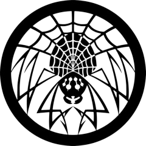
Task Force Mission: Specializes in tracking, containing, and exterminating anomalous vermin. Often used as a first-response team when tracking anomalous organisms.
Assisting In Containment of Objects:
- SCP-2350
- SCP-2810
- SCP-3470
- SCP-3640
- SCP-4310
- SCP-4749
- SCP-6092
MTF Lambda-14 ("One Star Reviewers")
Task Force Mission: A task force that specializes in dealing with retail-oriented locations and anomalies, be they singular restaurants or entire shopping districts displaying anomalies. Since their initial investigation of The Ambrose Restaurant, MTF Lambda-14 has been assigned to work to combat this group.
For more information on this task force, see the Ambrose Restaurants Dossier.
Assisting In Containment of Objects:
- SCP-4348
- SCP-4554
- SCP-5516
- SCP-5559-D
Action Reports:
- Dining Out
- The Ambrose Fair
MTF Mu-3 ("Highest Bidders")
Task Force Mission: Mobile Task Force Mu-3 is dedicated to monitoring GoI 'Marshall, Carter & Dark Ltd'. Through the combined efforts of undercover agents and covert-ops specialists, their objective is: identifying objects of interest in possession of Marshall, Carter and Dark; isolating opportunities to recover these objects; and, ultimately achieving their containment.
Assisting In Containment of Objects:
- SCP-2423
- SCP-2463
- SCP-2818
- SCP-5169
- SCP-6140
Action Reports:
- Application to Form MTF Mu-3
- Little Draft Horses
- Broker-Bailer-Grifter-THIEF
- Cover Letter for After-Action Report: Operation Free Market
- creative-differences">Creative Differences
MTF Mu-4 ("Debuggers")
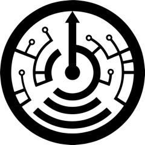
Task Force Mission: Mobile Task Force Mu-4 specializes in the identification, tracking, retrieval, and containment of electronic devices and transmissions, especially anomalous computers and network-related anomalies. This includes the investigation of internet sites suspected of anomalous capabilities or involved in anomalous events.
Assisting In Containment of Objects:
- SCP-155
- SCP-892
- SCP-896
- SCP-1290
- SCP-1866
- SCP-2160
- SCP-2223
- SCP-2698
- SCP-2738
- SCP-2876
- SCP-2890
- SCP-3030
- SCP-3045
- SCP-3089
- SCP-3101
- SCP-3334
- SCP-3858
Action Reports:
MTF Mu-13 ("Ghostbusters")
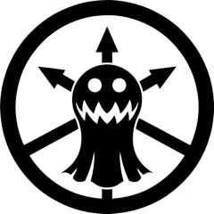
Task Force Mission: Mobile Task Force Mu-13 specializes in the tracking, analysis, and containment of incorporeal or intangible manifestations and entities, particularly those believed to be sentient, sapient, or otherwise intelligent and adaptive.
Assisting In Containment of Objects:
- SCP-128
- SCP-460
- SCP-1036
- SCP-2227
- SCP-3371
- SCP-4973
- SCP-5230
- SCP-5685
- SCP-6403
- SCP-6501
Action Reports:
- Are We There Yet?
- Tasers & Thermite
- Lockdown Procedures
- Spilled Milk
MTF Nu-7 ("Hammer Down")
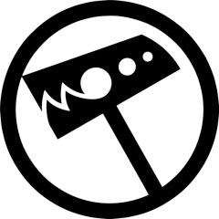
Task Force Mission: Armed Mobile Task Force Nu-7 is a battalion-strength force consisting of three company-sized elements of special operations infantry forces, a light armored vehicle company, tank platoon, helicopter squadron, chemical-biological-radiological-nuclear (CBRN) platoon, combat engineer platoon, nuclear weapon specialist (NWS) squad, plus additional combat specialist and support personnel. AMTF Nu-7 is based primarily out of Armed Bio-Containment Area-14 and is tasked with responding to incidents involving loss of communication with major Foundation facilities under circumstances wherein a site-wide breach, enemy compromise, or other similarly catastrophic event is suspected.
Assisting In Containment of Objects:
- SCP-939
- SCP-1105
- SCP-1943
- SCP-2128
- SCP-2546
- SCP-2660
- SCP-2706
- SCP-2803
- SCP-3221
- SCP-4290
- SCP-4297
- SCP-6644
Action Reports:
- Lockdown Procedures
- Aftermath
- Operation "Camp Granada"
- The Drooling Path Part 2
- Emergency Alteration of Operation Lahmi-Gath
MTF Omicron Rho ("The Dream Team")
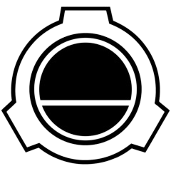
Task Force Mission: The Foundation has discovered the method of becoming Oneiroi, and now with this power are more capable of containing them. For decades they teach their agents the technique that allows one consciousness to join another’s. The few mentally hardened individuals that succeed are organized into a task force. The first of these was Mobile Task Force Omicron Rho.
Assisting In Containment of Objects:
- SCP-1394
- SCP-2144
- SCP-2235
- SCP-2603
- SCP-2934
- SCP-2942
- SCP-3060
Action Reports:
- #Xiupania
- Black Lotus
- Oneirocritic
- Oneirochemy
- Oneirophrenia
- A Breath of Relief No Different From Drowning
- Lessons for Old Dogs
MTF Pi-1 ("City Slickers")
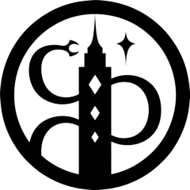
Task Force Mission: Mobile Task Force Pi-1 specializes in the investigation, containment, and subsequent cleanup of anomalies in densely-populated urban environments, particularly in the New York metropolitan area.
Assisting In Containment of Objects:
- SCP-274
- SCP-602
- SCP-1155
- SCP-1219
- SCP-1388
- SCP-2162
- SCP-2409
- SCP-2890
- SCP-2990
- SCP-3335
- SCP-3360
- SCP-3597
- SCP-4051
- SCP-5151
- SCP-5841
Action Reports:
- Incident 668 A
- Dear Cavalier
- Job Opportunities
- The Consequences of a Deep, Dark Disassociation
- A Symphony of Iron and Steel
MTF Rho-1 ("The Professors")
Task Force Mission: Mobile Task Force Rho-1 specializes in the acquisition, containment, and transport of anomalies related to Group of Interest Alpha-388, "Alexylva University". With the reduction of the threat posed by the specific GoI, the MTF has expanded its focus to any and all containment for anomalous academic endeavors.
Assisting In Containment of Objects:
- SCP-877
- SCP-1546
- SCP-3138
- SCP-4028
- SCP-4218
- SCP-5179
Action Reports:
- Parable of the Wayward Prince
- Commencement
- Deontic
- Soliloquy
- Repel
- Negotiation
- Denouement and Epilogue
- Himinbjoerg
MTF Rho-9 ("Technical Support")
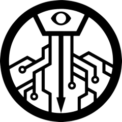
Task Force Mission: Mobile Task Force Rho-9 handles computer security for the Foundation. When memetic kill agents can lurk throughout the data structure, this is no simple task.
Assisting In Containment of Objects:
- SCP-1549
- SCP-2234
- SCP-4550
- SCP-5018
Action Reports:
- Redzone RedDB Archive Asynchronous Copy Vulnerability
- Your First Support Assignment
- Warm Milk and Ramen
- Himinbjoerg
MTF Rho-19 ("Cythereans")
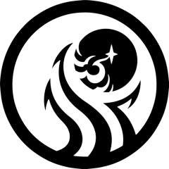
Task Force Mission: Mobile Task Force Rho-19 has been sent to Venus, in the hopes to establish a Foundation presence where there may be considerable anomalous activity.
Assisting In Containment of Objects:
Action Reports:
- M13 Personnel Memorabilia Log
- Volume 19.113.A-01: Of the Instruments, Composers, and the Confici Nobiscum
- Planetfall
- Exploration Log 2474.1
- Labyrinth's End
MTF Sigma-3 ("Bibliographers")
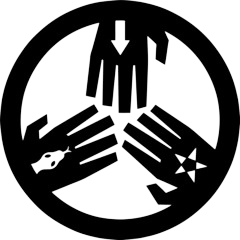
Task Force Mission: Mobile Task Force Sigma-3 is charged with covert infiltration of the anomalous community for the purpose of gathering intel, with a particular focus on the vast otherworldly location of The Wanderers' Library.
Assisting In Containment of Objects:
- SCP-472
- SCP-1591
- SCP-2975
- SCP-3591
- SCP-5917
- SCP-6000
Action Reports:
- Lessons Learned
- Site 11, Conference Room K, 8:58 AM, July 12, 1982
- Nothing Says "Promotion" Like a Bag Over Your Head
- Making a Scene
- Magic Orientation
- The Conspiracy of Sigma 3
- Operation AZURE PEREGRINE
- Consolidation
- A New Age of Magic
- The Beast Beneath The Library
MTF Sigma-66 ("Sixteen Tons")
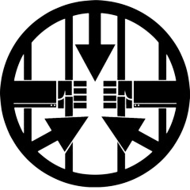
Task Force Mission: Mobile Task Force Sigma-66 is formed of captured members from other GoI. Despite the lack of loyalty the Foundation expects from the assembled team, they find the members' expertise of value.
Action Reports:
- MTF Sigma-66 Post-Mission Psychological Evaluation
- Stick the Landing
- Two Transcribed Conversations In Very Different Tones
- A Dysfunctional Heist
- Headache
- This Year
MTF Tau-5 ("Samsara")
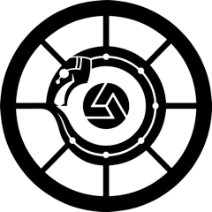
Task Force Mission: Immortal cyborg clones created from the flesh of a dead god, Tau-5 utilizes esoteric and experimental Foundation weaponry to investigate and contain thaumaturgic, magical, and psionic threats.
Assisting In Containment of Objects:
- SCP-1730
- SCP-2621
- SCP-2970
- SCP-3780
- SCP-4755
- SCP-6442
Action Reports:
- Avatara
- GRANT REQUEST FOR INVESTIGATING THE APPLICATION OF CERTAIN RESEARCH ASSETS IN OVERCOMING INHERENT LIMITATIONS OF THE HUMAN BODY
- Operation AZURE PEREGRINE
- The Lord of Endowments
- Samsara
- Deus Vulture
- A Thin Dangerous Line
- Death Perception
- The Powers That Bark
- SCP-2673 Containment Maintenance Log
MTF Tau-9 ("Bookworms")
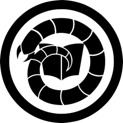
Task Force Mission: Deals with anomalies related to the /wanderers-library-hub">Library, the Serpent's Hand, and 'magic'; A more traditional counterpart to Sigma-3.
Assisting In Containment of Objects:
- SCP-2546
- SCP-3743
- SCP-5267
- SCP-6237
Action Reports:
- Magic Orientation
- Prisoners
- Family
- Sisters
- Looking Forward
- EE-8832
MTF Phi-2 ("Clever Girls")
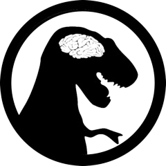
Task Force Mission: Specializes in the study, tracking, capture, and hunting of prehistoric anomalies, especially dinosaurs.
Assisting In Containment of Objects:
- SCP-3057
- SCP-3467
- SCP-3659
- SCP-3934
- SCP-4041
- SCP-4131
- SCP-5533
- SCP-5893
MTF Psi-7 ("Home Improvement")
Task Force Mission: /mtf-psi-7-home-improvement-hub">Mobile Task Force Psi-7 specializes in the undercover investigation, containment, and/or demolition of anomalous buildings or buildings affected by anomalies, particularly residential homes in populated areas. This includes the acquisition or transfer of affected buildings to Foundation control as well as initial observation and documentation of such buildings prior to transfer to local containment teams for long-term or ongoing containment.
Assisting In Containment of Objects:
- SCP-574
- SCP-744
- SCP-941
- SCP-1452
- SCP-1684
- SCP-1967
- SCP-2215
- SCP-2281
- SCP-2311
- SCP-2407
- SCP-2426
- SCP-2490
- SCP-2891
- SCP-2975
- SCP-3050
- SCP-3970
- SCP-4480
- SCP-4572
- SCP-5028
- SCP-5421
Action Reports:
- Overview of MTF Psi-7 "Home Improvement"
- Contingency
- The Beast Beneath The Library
- Secure Facility Dossier: Site-77
MTF Psi-8 ("The Silencers")
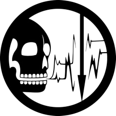
Task Force Mission: Mobile Task Force Psi-8 specializes in the investigation, tracking, containment and/or destruction of individuals suspected to be capable of or having been affected by reanimation anomalies, as well as investigating suspected cases of communication with deceased individuals. This includes the severing of devices intended to allow communication with individuals buried alive, such as bells, pipes, and phones, as well as detainment and interrogation of individuals claiming to have had contact with deceased individuals.
Assisting In Containment of Objects:
- SCP-565
- SCP-2158
- SCP-2922
- SCP-3591
- SCP-3914
- SCP-4175
- SCP-6944
Action Reports:
MTF Omega-0 ("Ará Orún")
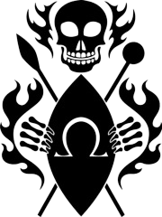
Task Force Mission: The "saints" of MTF Omega-0 are informational constructs with the memories of deceased Foundation personnel able to manifest through access of the Foundation's intranet terminals. Using Identity Warfare Training (IWT) they protect their living comrades against informational threats and entities. The existence of MTF ω-0 is unknown to most or all of the living members of the Foundation.
Assisting In Containment of Objects:
- SCP-1463
- SCP-2111
- SCP-2759
- SCP-3664
Action Reports:
- In The Trenches With the Dead
- Matterminded
- Your Last First Day
- Ará Orún
- Unthreaded
- Personal Log of Richard Larenz
- A Thin Dangerous Line
MTF Omega-7 ("Pandora's Box")
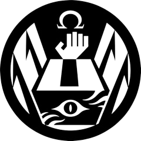
Task Force Mission: Mobile Task Force Omega-7 is an experimental task force specializing in the acquisition and containment of anomalies utilizing cooperative anomalous humanoid entities, particularly SCP-076 and SCP-105. Mobile Task Force Omega-7 has been disbanded and decommissioned; this entry is to be deleted by order of the Records and Information Security Administration.
Utilizing Objects:
Assisting In Containment of Objects:
- SCP-175
- SCP-354
- SCP-732
- SCP-4450
Action Reports:
- Omega 7 Incident Log
- Personal Log of Agent A. A.
- Beyond The Depths: Asset, Not Agent
- The Omega-7 and The Bench of Shame
- Incident Zero
- Part 1
- Part 2
- Part 3
- Part 4
- Part 5
MTF Omega-12 ("Achilles' Heels")
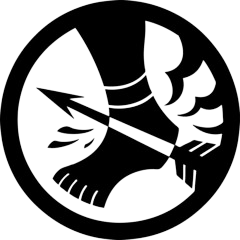
Task Force Mission: A task force composed of reality bending Foundation personnel from an alternate universe. Omega-12 is tasked with capturing SCP-3480-2 instances, guarding the many entities imprisoned in Area-13, and hunting down powerful uncontained reality benders elsewhere.
Assisting In Containment of Objects:
- SCP-3155
- SCP-3221
- SCP-3480
- SCP-3797-ARC
- SCP-4455
- SCP-4800
Action Reports:
- On The Slope Of Olympus
- SCP-3301 Testing Log 012
MTF Stigma-9 ("Evolved from Naturally Occurring Gears, Levers and Pulleys")
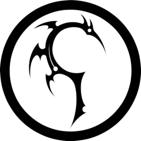
Task Force Mission: —Historically, the Church of the Broken God had always prided itself on its artificiality - that its faith is proven with tangible artifacts and physical devices of miracles. So, when the time came to destabilize the Church, the Foundation put forth a team of forgers, and Stigma-9 was it.
Assisting In Containment of Objects:
- SCP-2834
- SCP-3221
- SCP-3341
- SCP-5862
Action Reports:
- Broken Faith
- Operation Hippodrome
- Recording Hippodrome 045
Additional MTFs
MTF Beta-2 ("Bayou Boys")
Task Force Mission: Region-specific task force based in Louisiana. Trained to act in swamp/wetland environments.
Assisting In Containment of Objects:
- SCP-4421
- SCP-4476
- SCP-5038
- SCP-5138
{kind=link}
{kind=link}
{kind=link}